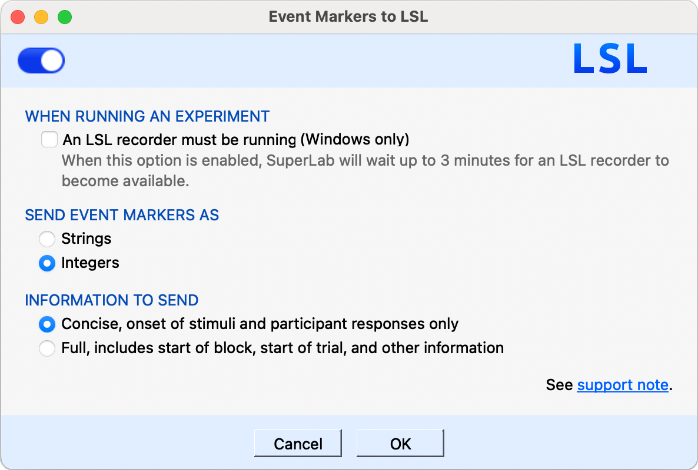

Cedrus SuperLab X6
This guide shows how to send time-stamped event markers from Cedrus SuperLab X6 to Mentalab Explore Desktop over Lab Streaming Layer (LSL).
SuperLab X6 publishes markers on the LSL network. Mentalab Explore Desktop discovers that marker stream and pulls the markers so they appear alongside your Explore recording and visualization.
For more detail on LSL push and pull in Mentalab Explore Desktop, see the Lab Streaming Layer page.
| Best synchronization accuracy with LSL is achieved by using Mentalab Explore in combination with Mentalab Hypersync. |
Prerequisites
Hardware
-
Mentalab Explore device
-
Computer running SuperLab X6
-
Computer running Mentalab Explore Desktop (this can be the same machine, or another machine on the same network)
Software
-
SuperLab X6 version 6.5.2 or later (LSL support)
-
Mentalab Explore Desktop
Step 1: Enable LSL in SuperLab X6
In SuperLab X6:
-
Open your experiment.
-
Go to .
-
In the dialog that appears, turn on the switch in the upper left corner.

Enable LSL in SuperLab X6 by turning on the switch in the Event Markers to LSL dialog.
For Cedrus documentation, see:
Step 2: Pull SuperLab markers into Mentalab Explore Desktop
With SuperLab LSL already enabled:
-
Connect your Explore device in Mentalab Explore Desktop.
-
Go to the Visualization page and click LSL to open the LSL dialog.
-
Click Find marker stream inlets to discover available marker streams on the network.
-
Select the checkbox next to the SuperLab marker stream.
-
Click Pull markers from LSL.

In Mentalab Explore Desktop, discover the SuperLab marker stream, select it, and click Pull markers from LSL. Pulled markers should appear on the visualization.
Markers from SuperLab are placed at their accompanying timestamps in Mentalab Explore Desktop.
| To refresh the list of available marker streams, stop pulling markers first. Then start stream discovery again using Find marker stream inlets. |
You can confirm that Mentalab Explore Desktop is pulling markers by checking the down arrow next to the LSL button. When the background is blue, Mentalab Explore Desktop is pulling markers from at least one marker stream.
Step 3: Run the experiment
-
Start or continue your recording and visualization in Mentalab Explore Desktop as needed.
-
Run the experiment in SuperLab X6.
-
Event markers from SuperLab should appear in Mentalab Explore Desktop as they are sent.
| Make sure both applications can discover LSL streams. They must be on the same network, and firewall rules must allow LSL discovery and streaming. |
For more information or support, contact support@mentalab.com.